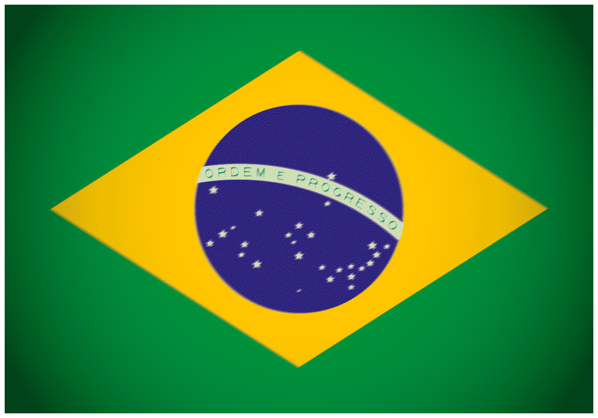
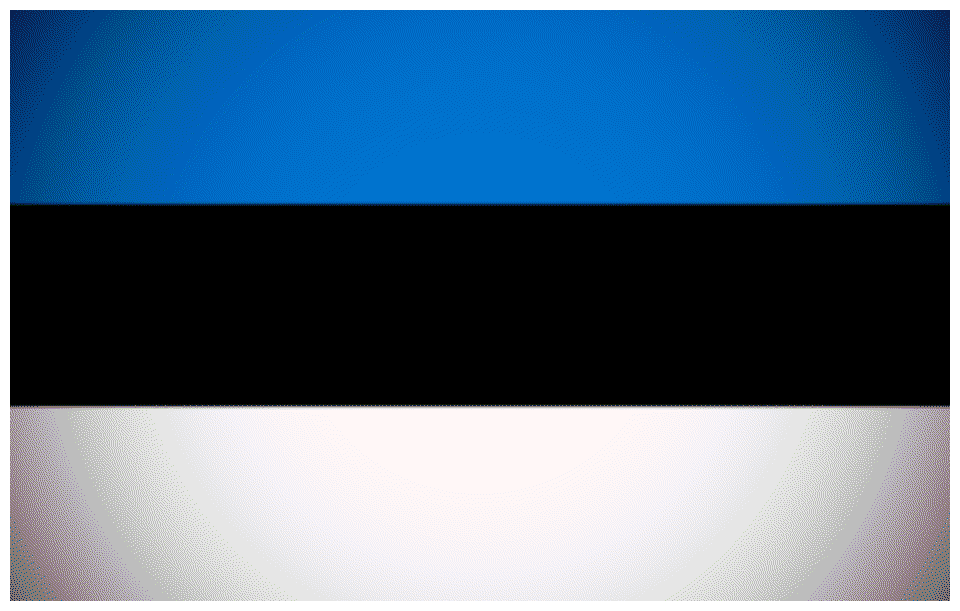
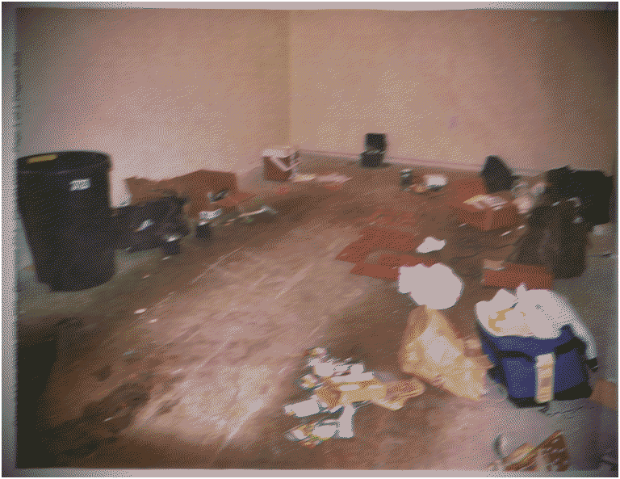

The Atomwaffen Division(AWD), later branded as the National Socialist Resistance Front, is a mostly dormant international neo-nazi accelerationist terrorist network based in the United States. Since its foundation in 2013, the group has had members held responsible for murders, bombings, and planned terrorist attacks. It is one of the few neo-nazi groups to have a truly international grasp, having offshoots in multiple countries including the United Kingdom (as the Sonnenkrieg Division), Germany, Canada , the Baltic States (as the Feuerkrieg Division), Russia, Italy , Finland , France, Argentina, Brazil

, and Spain. The group advocates and plans violent terrorist attacks against the United States government and for accelerationism, an ideology that promotes terrorism to speed up the collapse of modern society and the rise of a white nationalist one. Following James Mason's announcement of the American branches' apparent disbanding, AWD splintered into a variety of satanist, neo-nazi, and even "pro-rape" groups. Due to its violent methods, AWD and its international offshoots have been listed as terrorist groups by the United Kingdom, Canada , Australia, Austria , Italy , and Estonia

.
Ideology & Tactics
The Atomwaffen Division and its various international affiliates follow an ideology of militant accelerationist neo-nazism. Every American AWD member in training was required to read SIEGE by James Mason, the ideologue and spokesperson for the group. In Siege, neo-nazis are recommended to launch lone wolf terrorist attacks instead of mass organizing like other neo-nazi groups. The book advocates for creating pure white ethnostates by starting race wars through random acts of terrorism. Uniquely, Mason also promotes and takes inspiration from cult leader Charles Manson, supporting his idea of "helter skelter". Siege attracts young men by saying that society is at fault for them not fitting in. Mason states that outcasts should wear it as a "badge of honor". This statement has helped propagate the promotion of misogyny and sexual assault. To train members who carry out attacks like the ones described in Siege, the AWD seeks former military personnel who can spread their knowledge in explosives, firearms training, and insurgency within the group. Lastly, like jihadist or islamist militant groups, the AWD release propaganda videos of their paramilitary training. In said videos, "hate camps", or buildings where members conduct militaristic training, are shown. In the propaganda releases, in order to visually show their message in a way similar to the nazis of old, members burn the flags of their perceived enemies, including the US, the UN, the LGBT movement, Israel etc. To attract new members, the AWD uses propaganda posters and online forums like the neo-nazi Iron March and encrypted groups on "terrorgram". After the arrest of Brandon Russell, the group's founder, John Cameron Denton (also known as "Rape") assumed leadership, moving the group into a satanic direction, allying with the Order of Nine Angels and the Tower ov Blood. The O9A have also infiltrated other branches of the Atomwaffen Division, including the Sonnenkrieg Division and the Feuerkrieg Division. Despite its "disbanding" by James Mason, the AWD continue to inspire copycat shootings and bombings, resulting in the deaths of dozens.
Notable Actions

Fig 1. ASSEMBLY OF IEDS AND EXPLOSIVES IN THE HOME OF BRANDON RUSSELL, WHO WAS PREPARING FOR ATTACKS ON SUBSTATIONS c. 2017-2018
Fig 3. WEAPONS, MILITANT MANUALS, NEO-NAZI PROPAGANDA, AND THE FLAG OF THE ATOMWAFFEN DIVISION IN THE HOUSE OF A YOUNG ADULT PREPARING FOR ATTACKS c. DECEMBER OF 2025